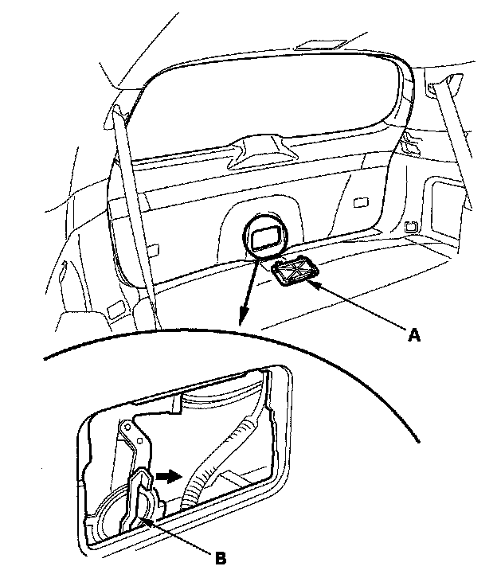
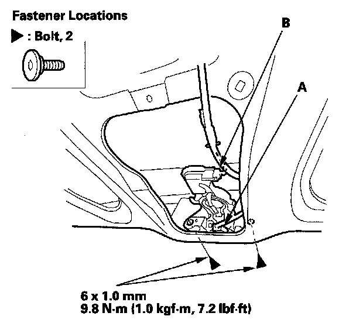
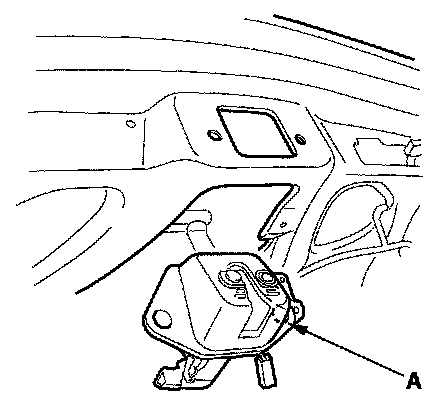
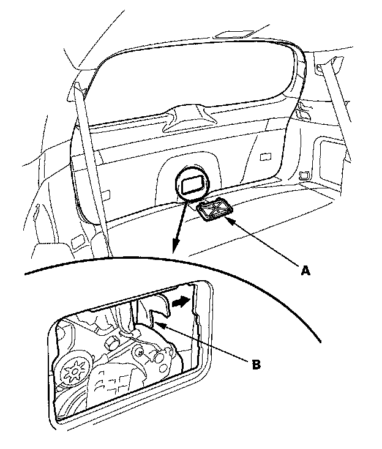
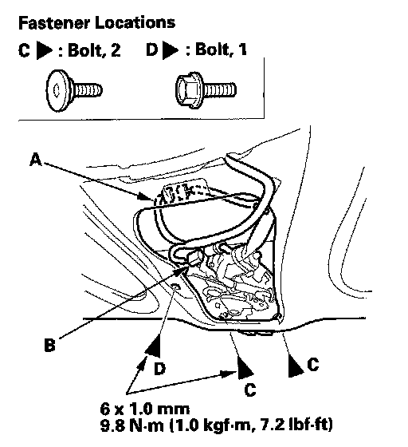
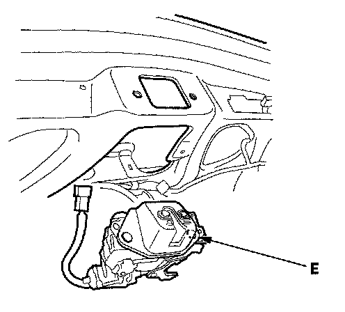

Trunk / Liftgate Latch: Service and Repair
Tailgate Latch ReplacementWithout Power Tailgate
- Put on gloves to protect your hands.

- If the tailgate latch can't be unlocked by using the keyless entry transmitter or the inside/outside tailgate switches, or by unlocking the driver's door lock, remove the maintenance lid (A) from the tailgate lower trim panel, then turn the emergency lever (B) clockwise as shown.
1. Remove the tailgate lower trim panel.

2. Disconnect the tailgate latch switch connector (A) and tailgate actuator connector (B).
3. Remove the bolts.

4. Pull the tailgate latch (A) out, then remove it
5. Install the latch in the reverse order of removal, and note these items:
- Make sure the connectors are plugged in properly.
- Make sure the tailgate opens properly and locks securely.
With Power Tailgate
- Put on gloves to protect your hands.

- If the tailgate latch can't be unlocked by using the keyless entry transmitter or the inside/outside tailgate switches, remove the maintenance lid (A) from the tailgate lower trim panel, then turn the emergency lever (B) clockwise as shown.
1. Make sure you have the anti-theft code for the audio and the navigation system (if equipped), and then disconnect the negative cable from the battery.
NOTE: If you remove the tailgate latch while the negative battery cable is still connected, the vehicle goes into the fail-safe mode.
2. Remove the tailgate lower trim panel.

3. Disconnect the tailgate latch connector (A) and actuator connector (B).
4. Remove the bolts (C, D).

5. Pull the tailgate latch (E) out, then remove it.
6. Install the latch in the reverse order of removal, and note these items:
- Make sure the connectors are plugged in properly.
- Reconnect the negative cable to the battery.
- Enter the anti-theft code for the audio and the navigation system (if equipped).
- Check for any DTCs that may have been set during repairs, and clear them.
- Do the steering column position memorization.
- Set the clock.
- Make sure the tailgate opens properly and locks securely.